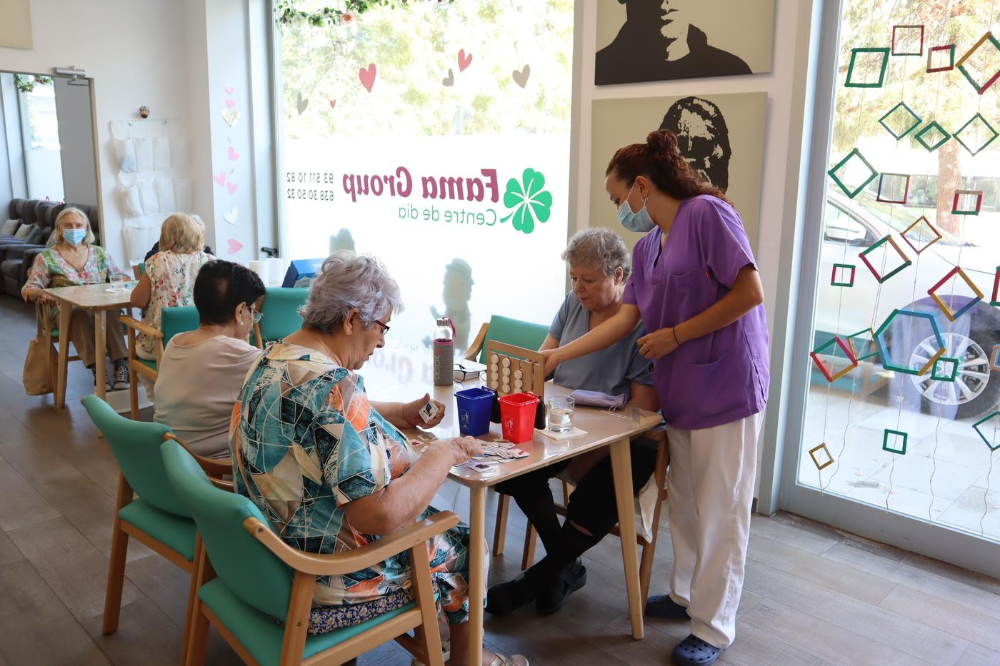

Inicio › Nuestros centros › Centro de día Fama Group

Sitges
Centro de día Fama Group
- Dirección
- Carrer Salvador Soler i Forment, 13, 08870 Sitges
- Horario
- Lunes a viernes
8:00 – 19:00 - Teléfono
- 935 11 10 82 · 638 30 50 32
- Correo
- administracio@cuida.cat
El Centro de Día Fama Group, ubicado en Sitges, ofrece un espacio de apoyo y atención diurna para personas mayores, diseñado para favorecer su autonomía y bienestar en un entorno cercano y seguro.
Con un equipo de profesionales altamente cualificado, ofrecemos una atención personalizada y centrada en la persona, adaptándonos a las necesidades individuales de cada usuario. Nuestro objetivo es mejorar su calidad de vida y ofrecer tranquilidad a las familias.
En Fama Group, las personas mayores pueden disfrutar de:
- Actividades terapéuticas y estimulación cognitiva
- Fisioterapia y atención emocional
- Talleres creativos y actividades sociales
- Áreas comunes cómodas y luminosas
Servicios del centro
Fisioterapia
Mejoramos la movilidad, aliviamos molestias y promovemos el bienestar físico, con una atención adaptada a cada persona.
Enfermería
Seguimiento de constantes vitales, gestión y administración de medicamentos, revisión de dietas y promoción de la salud.
Terapia ocupacional
Entrenamiento en las actividades de la vida diaria, talleres de estimulación cognitiva y asesoramiento en ayudas técnicas.
Auxiliar de geriatría
Acompañamiento y ayuda en la higiene, la alimentación y las actividades de cada día, hidrataciones y servicio de duchas.
Educación social
Actividades de animación, fiestas populares y talleres manuales y creativos que fomentan la motivación y las relaciones.
Transporte adaptado
Recogemos y llevamos a casa con transporte adaptado, para que llegar al centro sea cómodo.
Podología
Atención especializada para el cuidado de los pies y una movilidad cómoda y saludable.
Peluquería
Corte de cabello y tratamientos capilares para que se sientan bien y bien cuidados.
Atención domiciliaria
Apoyo en casa para personas con autonomía limitada, para que puedan seguir en su entorno en buenas condiciones.
Actividades
- Estimulación cognitiva
- Mantenimiento de la capacidad funcional
- Reeducación de las actividades de la vida diaria
- Actividades de ocio y talleres creativos
- Salidas por el entorno
- Fiestas populares y visitas al centro


Reseñas
La meva àvia està encantada al centre, la venen a buscar a casa, té amigues, fa gimnàstica i activitats cada dia i s'ho passa molt bé. Tracte genial!!
Desde el momento en que mi padre empezó a asistir al centro, ha experimentado una notable transformación en su bienestar y calidad de vida. Este centro no es sólo un lugar de cuidado, sino un hogar acogedor donde los adultos mayores pueden florecer y disfrutar de una vida activa y enriquecedora.
Cómo llegar
Carrer Salvador Soler i Forment, 13, 08870 Sitges · Abrir en Google Maps